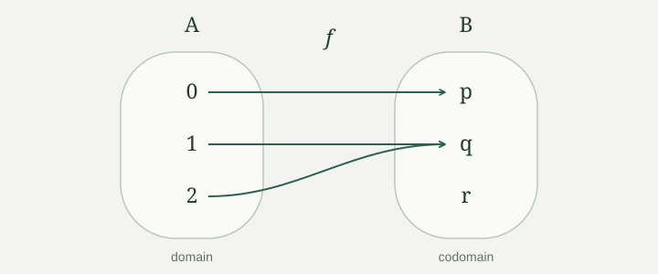

Much of mathematics starts with two questions: which objects are we talking about, and how are they related? Sets let us answer the first question. Maps, which we meet below, describe one way to connect the objects.
A set is a collection whose members, called its elements, are all that matter. We write \(x\in A\) to say “\(x\) belongs to \(A\),” and \(x\notin A\) to say that it does not. Curly brackets list the elements. For example, \(A=\{2,5,8\}\) has three elements.
Changing the order of a list or repeating an element does not change its set:
This is a rule about sets, not about every kind of collection. A shopping list with “two apples” records something a set of fruit names does not. Later, ordered pairs will also record information that a set loses.
We can describe a set by a condition instead of a list. The notation
means: start with the natural numbers and keep precisely the even ones. Read the bar as “such that.” Here and throughout these notes, \(\mathbb N=\{0,1,2,\ldots\}\), so \(0\in E\). We use \(\mathbb Z\) for the integers and \(\mathbb R\) for the real numbers.
We will use sets as a working language. We do not need to decide how every mathematical object is built from more basic ones. We do need to say what our objects are and apply the same rules consistently. When we select objects by a condition, we select them from an already specified set. We do not assume that there is a set containing absolutely everything.
| Notation | Read it as |
|---|---|
| \(P\Rightarrow Q\) | If \(P\) holds, then \(Q\) holds. |
| \(P\Longleftrightarrow Q\) | \(P\) holds if and only if \(Q\) holds: both implications are claimed. |
| \(\forall x\in A,\ P(x)\) | Every element of \(A\) has property \(P\). |
| \(\exists x\in A,\ P(x)\) | At least one element of \(A\) has property \(P\). |
| \(\exists!x\in A,\ P(x)\) | Exactly one element of \(A\) has property \(P\). |
| \(X:=Y\) | We define \(X\) to mean \(Y\). |
“Or” allows both alternatives unless we say otherwise. “There exists” does not mean “there exists exactly one.” “If” gives one implication; “if and only if” gives two.
We use ordinary classical logic, including arguments by contradiction and the split into “a statement holds” and “it does not hold.” This does not say that there is always a quick procedure for deciding which case we are in.
Letters stand for arbitrary objects unless values are assigned to them. In a proof, “take \(x\in A\)” means to consider any element satisfying that condition, without assuming extra properties of \(x\). The arguments below concern finite and infinite sets alike unless finiteness is stated.
The empty set, written \(\varnothing\), has no elements. A singleton \(\{a\}\) has exactly one element, namely \(a\).
We write \(A\subseteq B\), and say that \(A\) is a subset of \(B\), when every element of \(A\) also belongs to \(B\). In symbols,
Equality is allowed: \(A\subseteq A\). We write \(A\subsetneq B\) for a proper subset, meaning \(A\subseteq B\) and \(A\ne B\). Some books use \(\subset\) with different meanings; we use the two symbols above to avoid that ambiguity.
Membership and inclusion ask different questions. For example, \(2\in\{2,5\}\) says that the number \(2\) is an element, while \(\{2\}\subseteq\{2,5\}\) compares two sets. The brackets matter.
Two sets are equal exactly when they have the same elements. This rule is called extensionality. It tells us what counts as equality, even if the sets have very different descriptions. For instance, \(\{n\in\mathbb N\mid n<3\}=\{0,1,2\}\).
The empty set is a subset of every set. To violate \(\varnothing\subseteq B\), we would need an element of \(\varnothing\) that is missing from \(B\); there is no such element. More generally, a statement about every element of an empty set is true because there is no element for which it can fail. A statement asserting the existence of an element of an empty set is false.
For sets \(A,B\),
Proof
If \(A=B\), either set has all the elements of the other, so both inclusions hold. Conversely, if both inclusions hold, an object belongs to \(A\) exactly when it belongs to \(B\). The equality rule in then gives \(A=B\). □
This is a useful proof pattern: start with an element of the left-hand set and show that it belongs to the right-hand set, then reverse the roles. Another way to write the same reasoning is a chain of “if and only if” statements about membership.
Inclusion is also transitive: if \(A\subseteq B\) and \(B\subseteq C\), then \(A\subseteq C\). Indeed, an element of \(A\) first belongs to \(B\), and therefore to \(C\).
Are \(\varnothing\) and \(\{\varnothing\}\) equal? Is \(\varnothing\in\{\varnothing\}\)? Is \(\varnothing\subseteq\{\varnothing\}\)?
They are not equal. The first has no elements; the second has one element, which happens to be the empty set. Thus \(\varnothing\in\{\varnothing\}\) is true. The inclusion is also true, for a different reason: the empty set is a subset of every set.
A set can itself be an element of another set. Thinking of an empty box inside a box can help here: the outer box is not empty. The boxes are only a picture; the membership statements give the precise answer.
Let \(A,B\) be subsets of a fixed set \(U\), which specifies the objects under discussion.
| Set | Which elements belong? |
|---|---|
| Union \(A\cup B\) | Those in \(A\), in \(B\), or in both. |
| Intersection \(A\cap B\) | Those in both \(A\) and \(B\). |
| Difference \(A\setminus B\) | Those in \(A\) that are not in \(B\). |
| Complement \(A^c:=U\setminus A\) | Those in \(U\) that are not in \(A\). |
For \(U=\{0,1,2,3,4\}\), \(A=\{0,2\}\), and \(B=\{2,3\}\), these are
The complement depends on \(U\). With the same \(A\) inside \(\mathbb N\), its complement would contain \(5,6,7,\ldots\) as well. We state the surrounding set when it is not clear from context.
Two sets are disjoint when their intersection is empty. This says they share no elements; it does not require either of them to be empty. For example, \(\{0,2\}\) and \(\{1,3\}\) are disjoint.
For subsets \(A,B,C\) of the same set \(U\), we have
The first is a distributive law. The other two are De Morgan’s laws.
Proof
An element belongs to \(A\cap(B\cup C)\) exactly when it belongs to \(A\) and to at least one of \(B,C\). That is exactly the condition for membership in \((A\cap B)\cup(A\cap C)\). Use .
An element of \(U\) is outside \(A\cup B\) exactly when it is outside both \(A\) and \(B\). This proves the second identity. It is outside \(A\cap B\) exactly when at least one of the two membership conditions fails. This proves the third. □
The same method explains \(A\cup B=B\cup A\), \(A\cap B=B\cap A\), \(A\cup\varnothing=A\), and \(A\cap\varnothing=\varnothing\). Read each equality as a statement about one arbitrary element.
The power set of \(A\), written \(\mathcal P(A)\), is the set of all subsets of \(A\). Its defining rule is
For example,
This power set has four elements, each of which is a set. In particular, \(\{0\}\) is an element of the power set. Also, \(\varnothing\) and \(A\) always belong to \(\mathcal P(A)\), because both are subsets of \(A\). If \(A=\varnothing\), these are the same subset, and \(\mathcal P(\varnothing)=\{\varnothing\}\).
Sometimes we have many sets, labelled by elements of an index set \(I\). A family \((A_i)_{i\in I}\) gives a set \(A_i\) for each label \(i\). Different labels are allowed to give the same set.
Suppose every \(A_i\) is a subset of a fixed \(U\). We define
The union asks for membership in at least one set; the intersection asks for membership in every set. With \(A_n=\{0,1,\ldots,n\}\) for \(n\in\mathbb N\), the union is \(\mathbb N\) and the intersection is \(\{0\}\). Every natural number appears eventually, but only zero appears in every set.
These definitions also settle an empty family. If \(I=\varnothing\), its union is empty: there is no index witnessing membership. Its intersection is \(U\): every \(x\in U\) satisfies all the membership requirements, because there are no requirements. The specified \(U\) is essential here.
An ordered pair \((a,b)\) records a first and a second component. Its equality rule is
Thus \((0,1)\ne(1,0)\), even though \(\{0,1\}=\{1,0\}\). The Cartesian product \(A\times B\) is the set of all pairs \((a,b)\) with \(a\in A\) and \(b\in B\). For example,
If either factor is empty, so is the product: there is no possible pair. We use ordered pairs by their components; we will not need a particular construction of a pair from sets.
A relation from \(A\) to \(B\) is a subset \(R\subseteq A\times B\). It specifies which pairs are related. We write \(a\,R\,b\) for \((a,b)\in R\). For instance, on \(\{0,1,2\}\), the relation “is less than” consists of \(\{(0,1),(0,2),(1,2)\}\).
A relation may connect one input to several outputs, or to none. A map has a more specific requirement.
A map, or function, \(f:A\to B\) assigns to each \(x\in A\) exactly one value \(f(x)\in B\). The set \(A\) is its domain and \(B\) its codomain. We treat both as part of the specified map.
There are two requirements: every allowed input gets an output, and no input gets two different outputs. Different inputs may have the same output. Some elements of the codomain may never be reached.

A map can be given by a table, a formula, or a description that determines its values. It need not come with a practical recipe for calculating them. In , the whole map is specified by \(f(0)=p\), \(f(1)=q\), and \(f(2)=q\).
The graph of \(f\) is \(\{(x,f(x))\mid x\in A\}\), a relation with exactly one output for each input. Here it is \(\{(0,p),(1,q),(2,q)\}\). Saying that a relation is a function means that it has this existence-and-uniqueness property.
Maps \(f,g:A\to B\) are equal when \(f(x)=g(x)\) for every \(x\in A\). The formulas \(f(x)=2(x+1)\) and \(g(x)=2x+2\) therefore define the same map \(\mathbb R\to\mathbb R\). Different formulas need not mean different maps.
Do the instructions \(f(x)=1/x\) and “let \(g(x)\) be a real number whose square is \(x\)” define maps \(\mathbb R\to\mathbb R\)?
No. The first gives no real output at zero. It does define a map \(\mathbb R\setminus\{0\}\to\mathbb R\).
The second has two problems. Negative inputs have no real output, and positive inputs have two possible outputs: at \(x=4\), both \(2\) and \(-2\) fit. Restricting to nonnegative inputs and requiring the nonnegative square root gives a well-defined map \([0,\infty)\to[0,\infty)\). Here \([0,\infty)=\{x\in\mathbb R\mid x\geq0\}\).
Specifying a domain and codomain and checking that the output exists and is unique are part of defining a map, not details to fill in after using it.
If \(f:A\to B\) and \(g:B\to C\), their composition is the map \(g\circ f:A\to C\) defined by
Apply \(f\) first, then \(g\): the rightmost map acts first. The declared codomain of \(f\) here is the domain of \(g\), so every intermediate value is an allowed input. More generally, composition makes sense whenever all values of the first map lie in the domain of the second.
For maps of the real numbers given by \(f(x)=x+1\) and \(g(x)=2x\),
The order matters. For maps between different sets, the reverse composition may not even be defined.
The identity map on \(A\), written \(\operatorname{id}_A:A\to A\), leaves every element where it is: \(\operatorname{id}_A(x)=x\). If \(S\subseteq A\), the restriction \(f|_S:S\to B\) keeps the values of \(f\) but allows only inputs in \(S\).
For \(f:A\to B\), \(g:B\to C\), and \(h:C\to D\),
Also, \(\operatorname{id}_B\circ f=f=f\circ\operatorname{id}_A\).
Proof
At any \(x\in A\), both regroupings have value \(h(g(f(x)))\). The maps are equal because their values agree at every input. Composing with either indicated identity map gives \(f(x)\) at each input, which proves the remaining equalities. □
This is associativity: brackets can move, but the order of the maps stays fixed. It does not contradict the example in .
Let \(f:A\to B\). For \(S\subseteq A\), its image is the set of outputs reached from \(S\):
For \(T\subseteq B\), its preimage is the set of inputs whose outputs lie in \(T\):
We use \(f(x)\) for the value at an element and \(f(S)\) for the image of a subset; the context tells them apart. Other texts use \(f[S]\) for the latter. The image of the map, also called its range, is \(f(A)\). Its codomain is still \(B\), even if \(f(A)\ne B\).
The set \(f^{-1}(\{y\})\) is the fiber over \(y\): all inputs giving that one output. A preimage is defined for every map. The notation \(f^{-1}(T)\) does not assert that an inverse map exists. In the example, there is no way to recover a unique input from \(q\).
For \(f:A\to B\) and subsets \(T,V\subseteq B\),
Proof
Take \(x\in A\). Belonging to the preimage of \(T\cup V\) means that \(f(x)\) lies in at least one of \(T,V\). This says exactly that \(x\) lies in at least one of their preimages.
For intersection, replace “at least one” by “both.” For complement, \(f(x)\in B\setminus T\) means precisely \(f(x)\notin T\), since \(f(x)\) already belongs to \(B\). This is equivalent to \(x\notin f^{-1}(T)\). In each case, the two sides have the same elements. □
Notice which set supplies each complement: \(B\) on the output side, and \(A\) on the input side. We also have \(f^{-1}(\varnothing)=\varnothing\) and \(f^{-1}(B)=A\). These rules hold for every map.
For a map \(f:A\to B\) and subsets \(S,T\subseteq A\), are both of these identities always true?
The union identity is true. An output reached from \(S\cup T\) is reached from at least one of \(S,T\), and conversely.
For intersection, only \(f(S\cap T)\subseteq f(S)\cap f(T)\) always holds: an input in both sets gives an output in both images. But the same output can also come from different inputs.
Use the map in , with \(S=\{1\}\) and \(T=\{2\}\). The sets are disjoint, so \(f(S\cap T)=\varnothing\). Both images are \(\{q\}\), so their intersection is \(\{q\}\). This is a counterexample to the second identity.
These three words describe whether inputs can merge and whether outputs can be missed.
The map in is neither injective nor surjective: \(1\) and \(2\) both go to \(q\), and \(r\) is missed. The map \(n\mapsto n+1\) from \(\mathbb N\) to \(\mathbb N\) is injective, but not surjective, because it misses zero. The map \(x\mapsto x+1\) from \(\mathbb R\) to \(\mathbb R\) is bijective: the unique input for \(y\) is \(y-1\).
The codomain matters. The squaring map \(x\mapsto x^2\) from \(\mathbb R\) to \(\mathbb R\) is not surjective, but the same formula from \(\mathbb R\) to \([0,\infty)\) is surjective. Neither map is injective, since \(1\) and \(-1\) have the same square.
In the phrase “one-to-one,” the extra condition is that an output cannot come from two different inputs. Having one output for each input was already required of every map.
For \(f:A\to B\), \(S\subseteq A\), and \(T\subseteq B\),
Proof
If \(x\in S\), then \(f(x)\in f(S)\), which places \(x\) in \(f^{-1}(f(S))\). Other inputs may also land in the same image, so this inclusion can be strict.
An element of \(f(f^{-1}(T))\) is an output \(f(x)\) that belongs to \(T\). It therefore lies in both \(T\) and \(f(A)\). Conversely, if \(y\) lies in both, write \(y=f(x)\) using its membership in \(f(A)\). Since \(y\in T\), this \(x\) lies in \(f^{-1}(T)\), giving the reverse inclusion. □
If \(f\) is injective, the first inclusion is equality: from \(f(x)=f(s)\) with \(s\in S\), injectivity gives \(x=s\in S\). If \(f\) is surjective, the second identity becomes \(f(f^{-1}(T))=T\), since \(f(A)=B\).
An inverse of \(f:A\to B\) is a map \(g:B\to A\) satisfying both
A map has an inverse if and only if it is bijective. When an inverse exists, it is unique.
Proof
Suppose \(g\) is an inverse. If \(f(x)=f(x')\), applying \(g\) gives \(x=x'\), so \(f\) is injective. Every \(y\in B\) equals \(f(g(y))\), so \(f\) is surjective.
Conversely, if \(f\) is bijective, each \(y\in B\) has exactly one input \(x\) with \(f(x)=y\). Define \(g(y)\) to be that input. Then \(f(g(y))=y\). Also, \(x\) is the unique input for \(f(x)\), so \(g(f(x))=x\). Thus both inverse identities hold. Any inverse must send \(y\) to its unique input, which also proves uniqueness. □
The inverse map is written \(f^{-1}\). This notation now names a map, whereas the preimage notation in always names a set when applied to a subset. For a bijection the notations agree: the preimage of \(T\) is the image of \(T\) under the inverse map.
Checking just one of the two identities is not enough. On \(\mathbb N\), let \(f(n)=n+1\), and let \(g(0)=0\), \(g(n+1)=n\). Then \(g\circ f=\operatorname{id}_{\mathbb N}\), but \(f(g(0))=1\ne0\). The missed output zero prevents \(f\) from having an inverse.
For a fixed set \(B\), how many maps \(\varnothing\to B\) are there? Can a nonempty set map to \(\varnothing\)? Is the map \(\varnothing\to\varnothing\) bijective?
There is exactly one map \(\varnothing\to B\): it has no input-output pairs. No values need to be assigned, and any two such maps agree at every input because there are none.
There is no map from a nonempty set to \(\varnothing\). An element of its domain would need an output, and the codomain has no elements to supply one.
The empty-domain map is always injective. It is surjective exactly when \(B\) is empty. In particular, the unique map \(\varnothing\to\varnothing\) is bijective and is its own inverse. Empty cases fit the definitions; we do not need a separate exception for them.